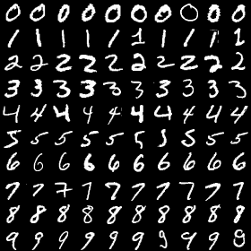

手書き数字（0〜9）の画像データセット。
正式名称は「Modified National Institute of Standards and Technology database」で、元のNISTのデータを加工して作られた。
・構成： 訓練用データ 60,000枚、テスト用データ 10,000枚
・サイズ： 28ピクセル×28ピクセル
・フォーマット： 256 諧調 (8bit)
・正解ラベル： 各画像が何の数字(0～9) かを示す正解データ (ラベル) が一対一でセットになっている
Yann LeCun's Home Page にはなくなったので、以下からダウンロードする
(訓練用画像) https://ossci-datasets.s3.amazonaws.com/mnist/train-images-idx3-ubyte.gz
(訓練用ラベル) https://ossci-datasets.s3.amazonaws.com/mnist/train-labels-idx1-ubyte.gz
(テスト用画像) https://ossci-datasets.s3.amazonaws.com/mnist/t10k-images-idx3-ubyte.gz
(テスト用ラベル) https://ossci-datasets.s3.amazonaws.com/mnist/t10k-labels-idx1-ubyte.gz
データは Big Endian で格納されている。
(オフセットの小さい方が上位バイト：MSB First)
オフセット： データ
0～3： signature 0x00、0x00、0x08、0x03
4～7: データ数 (訓練用は60,000、テスト用は10,000)
8～11: 画像高さ(行数：28)
12～15: 画像幅(列数：28)
16～: 画像データ
オフセット： データ
0～3： signature 0x00、0x00、0x08、0x01
4～7: データ数 (訓練用は60,000、テスト用は10,000)
8～: ラベル・データ
● 画像データ
ヘッダーを読み飛ばして、画像データを取得し、.npy に保存する。
(data/dataset_mnist/src/file2numpy_train_images.py)
(data/dataset_mnist/src/file2numpy_test_images.py)
import gzip
import numpy as np
with gzip.open('train-images-idx3-ubyte.gz', 'rb') as f:
data = np.frombuffer(f.read(), np.uint8, offset=16)
data = data.reshape((60000, 28,28))
np.save('train_images.npy', data)
print('save train_images.npy')
print(data.shape)
● ラベル・データ
ヘッダーを読み飛ばして、ラベル・データを取得し、.npy に保存する。
(data/dataset_mnist/src/file2numpy_train_labels.py)
(data/dataset_mnist/src/file2numpy_test_labels.py)
import gzip
import numpy as np
with gzip.open('train-labels-idx1-ubyte.gz', 'rb') as f:
data = np.frombuffer(f.read(), np.uint8, offset=8)
np.save('train_labels.npy', data)
print('save train_labels.npy')
print(data.shape)
●画像データ、ラベル・データ両用
ヘッダーを参照して、画像/ラベル、訓練用/テスト用を判断し、.npy に保存する。
(data/dataset_mnist/src/read_mnist.py)
import numpy as np
import gzip
def bytes2data(b):
data = b[3] + b[2] * 256 + b[1] * 256 * 256 + b[0] * 256 * 256 * 256
return data
def read_data(data_path):
with gzip.open(data_path, mode='rb') as f:
# read signature
b = f.read(4)
signature = bytes2data(b)
if signature != 0x803 and signature != 0x801:
print('failed to read signature: %x' % signature)
return
else:
print('succeeded to read signature: %x' % signature)
# read number of data
b = f.read(4)
nr_data = bytes2data(b)
print('number of data:', nr_data)
if signature == 0x803: # Image
# read height
b = f.read(4)
height = bytes2data(b)
# read width
b = f.read(4)
width = bytes2data(b)
print('%d x %d' % (width, height))
images = np.frombuffer(f.read(), np.uint8, offset = 0)
images = images.reshape((nr_data, height, width))
dst_path = '_images.npy'
if nr_data == 60000:
dst_path = 'train' + dst_path
elif nr_data == 10000:
dst_path = 'test' + dst_path
else:
dst_path = 'unknown' + dst_path
np.save(dst_path, images)
print('save %s' % dst_path)
print(images.shape)
else: # Labels
labels = np.frombuffer(f.read(), np.uint8, offset = 0)
dst_path = '_labels.npy'
if nr_data == 60000:
dst_path = 'train' + dst_path
elif nr_data == 10000:
dst_path = 'test' + dst_path
else:
dst_path = 'unknown' + dst_path
np.save(dst_path, labels)
print('save %s' % dst_path)
print(labels.shape)
import sys
def main():
argv = sys.argv
argc = len(argv)
print('%s read MNIST dataset' % argv[0])
print('[usage] python %s (MNIST gz file)' % argv[0])
if argc < 2:
quit()
read_data(argv[1])
if __name__ == '__main__':
main()
● .npy ファイルからラベル・データ、画像データを取得し、一部を表示する。
(data/dataset_mnist/src/display_partial.py)
import cv2, sys
import numpy as np
NR_IMAGES = 10
WIDTH = 28
HEIGHT = 28
argv = sys.argv
argc = len(argv)
print('%s display a small portion of MNST' % argv[0])
print('[usage] python %s (label(.npy)) (image(.npy))' % argv[0])
if argc < 3:
quit()
data1 = np.load(argv[1])
data2 = np.load(argv[2])
if len(data1.shape) == 1 and len(data2.shape) == 3:
labels = data1
images = data2
elif len(data1.shape) == 3 and len(data2.shape) == 1:
labels = data2
images = data1
else:
print('unexpected data')
print('%s:' % argv[1], data1.shape)
print('%s:' % argv[2], data2.shape)
quit()
row_imgs = np.zeros((0, WIDTH * NR_IMAGES), np.uint8)
for i in range(10):
indices = np.where(labels == i)[0]
col_imgs = np.zeros((HEIGHT, 0), np.uint8)
for index in indices[:NR_IMAGES]:
img = images[index]
col_imgs = np.hstack((col_imgs, img))
row_imgs = np.vstack((row_imgs, col_imgs))
cv2.imshow('partial', row_imgs)
cv2.waitKey(0)
cv2.destroyAllWindows()
cv2.imwrite('partial.png', row_imgs)
print('save partial.png')
